The Radio Behind the Dial
In 1938, Zenith introduced the Model 12-S-232 tombstone radio—a technical triumph featuring 12 vacuum tubes, electric motor tuning, the mechanical shutter "Robot Dial", and the green 6T5 "Magic Eye" target tube. Though officially designated solely by its model number when manufactured in 1938, the radio became universally known to collectors as "The Walton" after millions watched John-Boy and the Walton family huddle around this exact model in their Virginia living room throughout the iconic CBS television series.
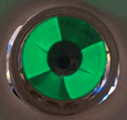
Magic Eye Animation
Active electron phosphor beam tuning to station resonance.
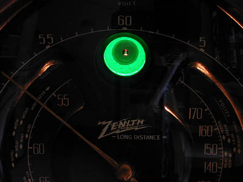
6T5 Target Tube
The physical vacuum tube seated above the dial face.
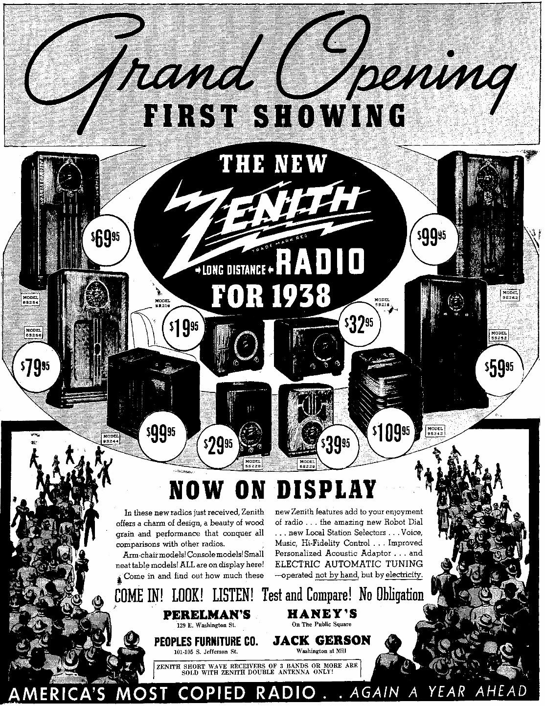
Model 5-S-228 Tombstone
Architectural walnut cabinet sharing the Walton design language.
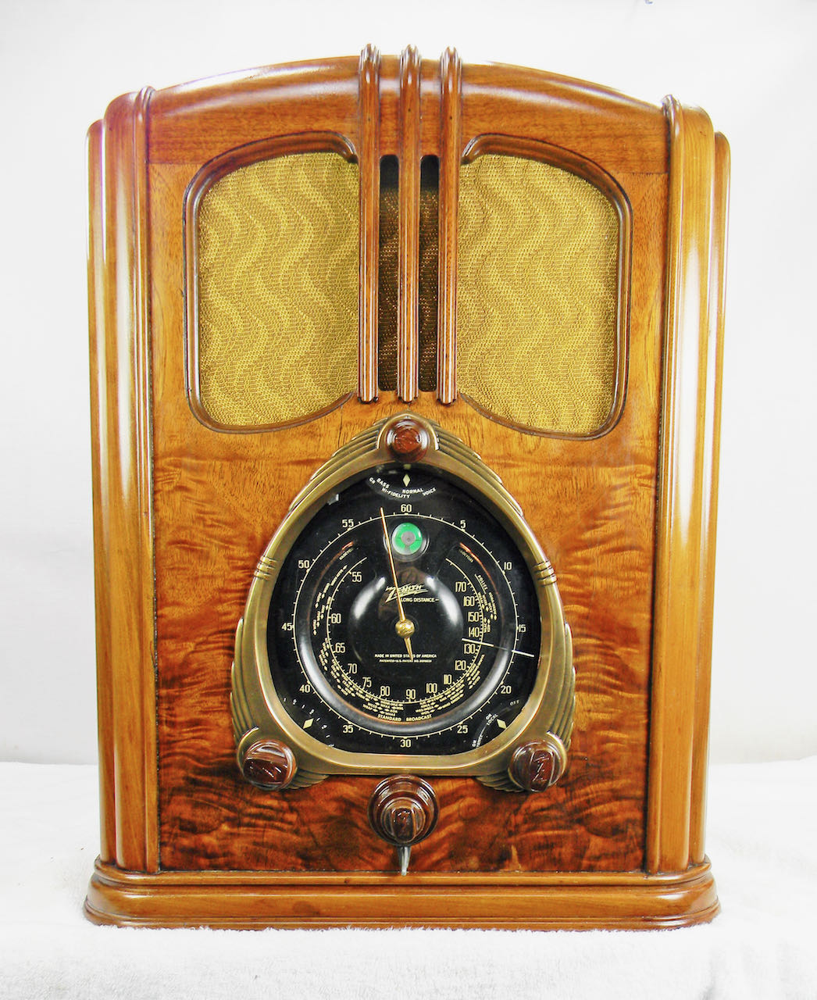
Walton Escutcheon
Motor tuning pushbuttons and multi-band shutter bezel.
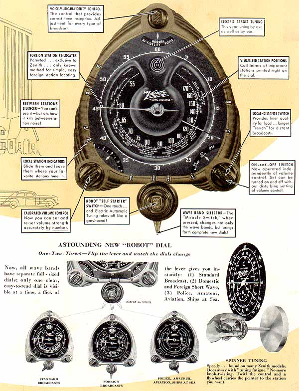
The Robot Dial Mechanism
Split-shutter leaf system that exposes one wave band at a time.
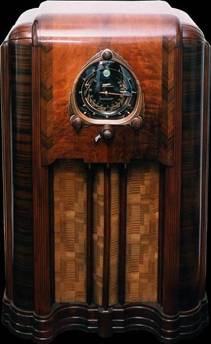
Model 12-S-267 Console
The massive floor console housing the 12-tube Walton chassis.
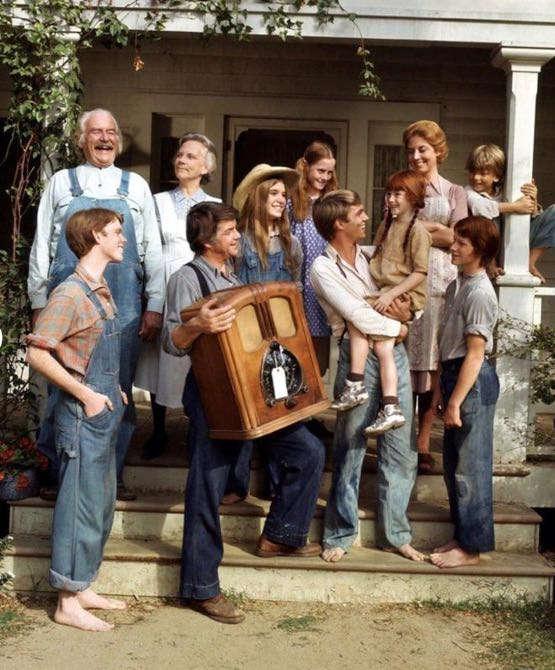
How the Radio Got Its Name: "The Walton"
When Zenith launched the radio in late 1937 for the 1938 model line, it was cataloged simply by chassis number: the Model 12-S-232 (alongside its 7-tube and 9-tube siblings, the 7-S-232 and 9-S-232). Priced at a hefty $115 in the depths of the Depression—the equivalent of over $2,500 today—it was a luxury showpiece of engineering.
Decades later in 1972, creator Earl Hamner Jr. brought The Waltons to CBS television. Set in the Blue Ridge Mountains of Virginia during the Great Depression and World War II, the series placed a 1938 Zenith tombstone radio proudly in the Walton family living room. Week after week, John-Boy, Grandma, Grandpa, and the children huddled around its glowing black dial and green Magic Eye to listen to fireside chats, dance music, and wartime dispatches.
The 1937 Vintage Press Archive
Original newspaper announcements and trade advertisements published across America introducing the 1938 Zenith Robot Dial line.
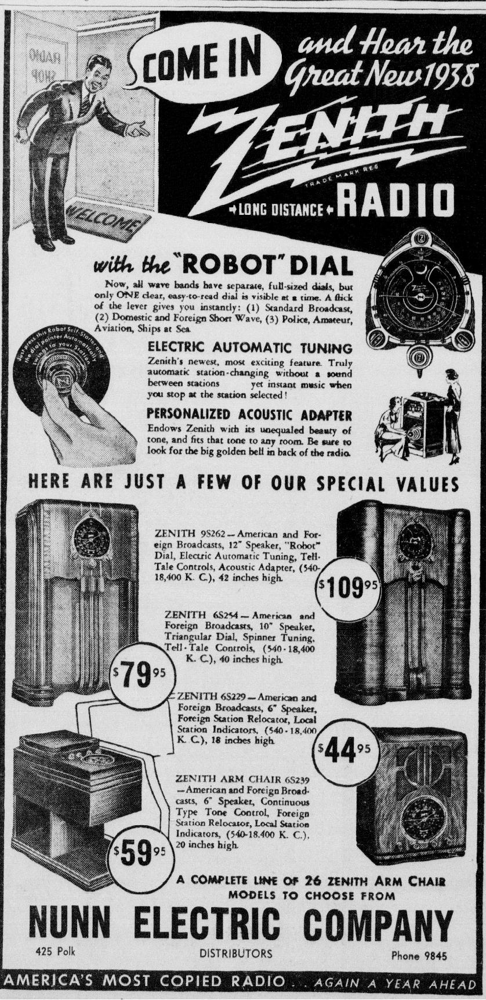
Amarillo Daily News
"Again, A Year Ahead — More Features Than Any Other Radio in the World."
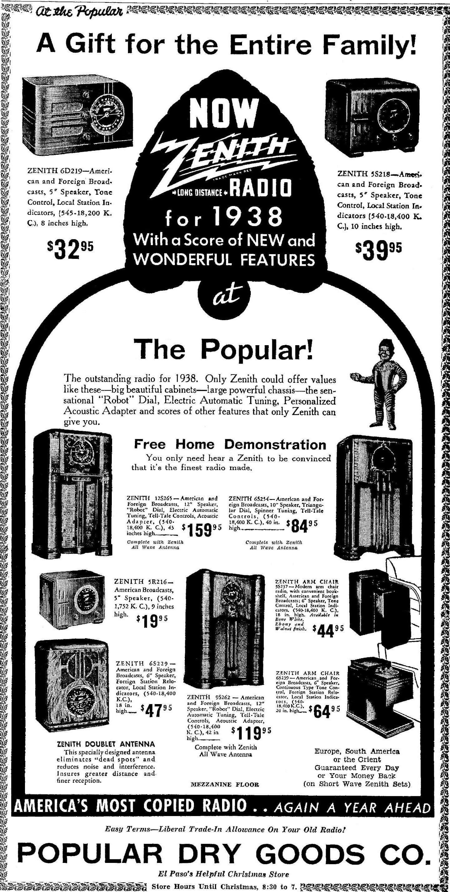
El Paso Times
"Christmas with Zenith — The Gift the Whole Family Enjoys Daily."
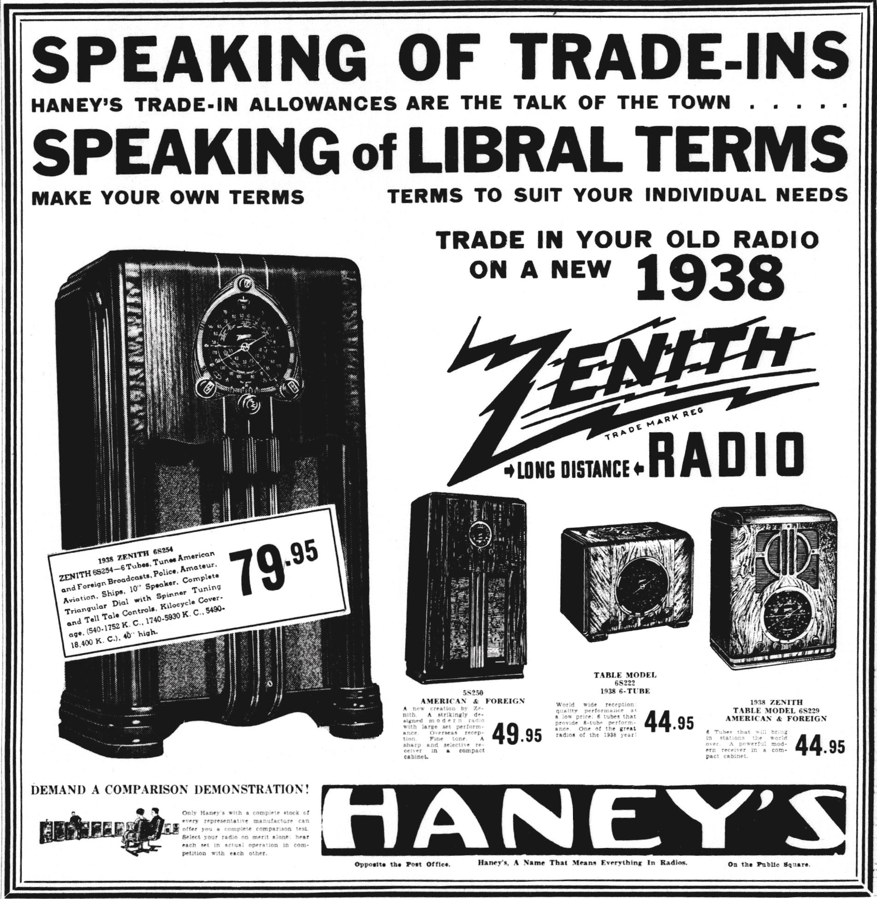
New Castle News
"Armchair Radio with Robot Dial: Tune Without Leaving Your Easy Chair."
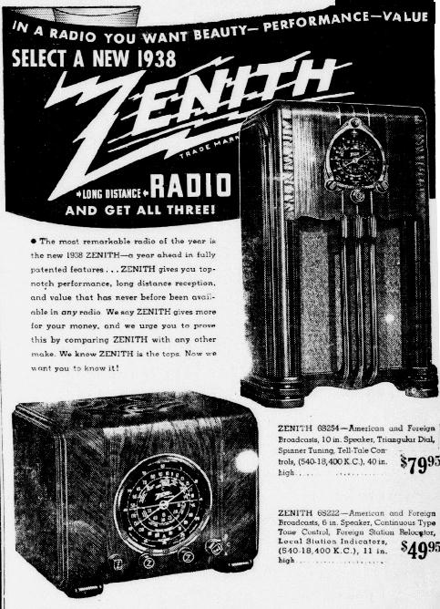
Radio Retailing Archive
National dealer spotlight on the 1938 Zenith Shutterdial revolution.